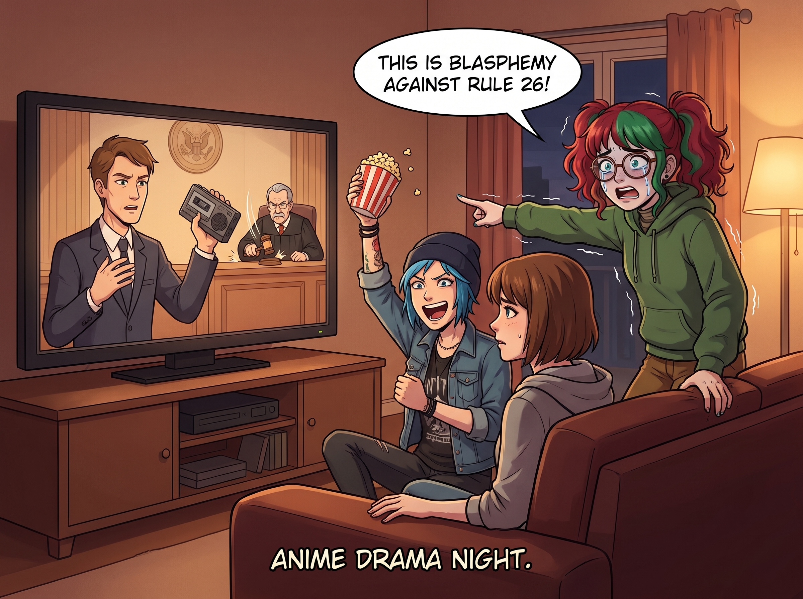

虛構世界的合規潔癖

二號車廂的週末電影之夜，通常是大家放鬆神經的時刻。但自從實習生 Lily 掌握了遙控器後，觀看任何帶有「專業背景」的職場劇，就變成了一場極度硬核的「聯邦合規與程序正義糾錯研討會」。
Lily 不會像普通觀眾那樣因為劇情邏輯不通而大吼大叫。她那被法規和條文填滿的大腦，面對劇中那些為了戲劇衝突而犧牲的專業常識時，會產生一種物理層面的過敏反應。
一、法庭劇的突襲證據
某個週五晚上，大家正在看一部風靡全美的律政劇。螢幕上，男主角律師在法庭上為了絕地反擊，突然從公事包裡掏出一份從未提交過的錄音帶，當庭播放，引得陪審團一片驚呼，法官敲著法槌大喊「肅靜」。
Chloe 抓著爆米花大喊：「太帥了！這才是反擊！」
而坐在沙發邊緣的 Lily，臉色已經慘白如紙。她雙手死死抓著沙發靠墊，呼吸急促，瞳孔劇烈地震，彷彿螢幕上的律師剛剛在她面前徒手掐死了一隻無辜的幼犬。
「不……這不可能……」Lily 的聲音發抖，帶著一種信仰崩塌的絕望。
「怎麼了，Lily？」Max 察覺到不對勁，「妳不舒服嗎？」
「這是在褻瀆聯邦民事訴訟規則第 26 條！」Lily 猛地站了起來，指著螢幕，眼眶因為極度的憤怒和不可置信而泛紅，「在庭審階段搞突襲證據？！這份證據根本沒有經過證據開示程序！這劇組的法律顧問是從幼兒園畢業的嗎？！」
還沒等大家反應過來，Lily 已經像一陣旋風一樣衝回工作台，翻開了那台可怕的筆記本電腦，雙手在鍵盤上化作一道殘影。
「Lily！妳在幹嘛？！」Chloe 驚恐地大喊。
「我在起草一份給聯邦通信委員會和美國律師協會的聯名檢舉信。」Lily 的鏡片反射著螢幕的冷光，語氣冰冷而瘋狂，「這種將嚴重程序違規包裝成英雄主義的文化垃圾，是對公眾法治觀念的蓄意毒害。我要求電視台立刻停播該劇，並對編劇團隊進行為期三個月的強制性法律程序再教育！」
二、醫療劇的無菌警報
第二天，為了防止 Lily 再次引發行政災難，Victoria 提議換一部溫情脈脈的經典醫療劇。
螢幕裡，幾位顏值極高的實習醫生在剛做完心肺復甦後，連手套都沒換，就深情地在走廊裡擁抱、甚至互相撫摸臉頰安慰彼此。
Victoria 剛想點評一下女主角的髮型，就聽到旁邊傳來一陣令人毛骨悚然的「喀喀」聲。那是 Lily 把手裡的塑膠水杯硬生生捏裂的聲音。
「交叉感染……」Lily 渾身發抖，大眼睛裡已經蓄滿了因為過度驚恐而產生的淚水，「他們剛剛接觸了患者的體液……沒有進行七步洗手法……沒有更換無菌服……現在居然在公共走廊發生黏膜級別的接觸……」
Lily 崩潰地抱住頭，發出了一聲絕望的哀嚎：「這是對疾病控制與預防中心規範的公然挑釁！那家虛構醫院的院內感染率絕對已經突破了 400%！他們不是在治病，他們是在培養超級細菌！」
她再次撲向電腦：「我要向廣播電視協會發送一份關於『醫療劇傳染病防護錯誤示範』的六十頁評估報告！」
三、聖母的斷網超度
面對一個因為「影視劇 Bug」而即將在現實世界中引發行政核爆的實習生，Chloe 和 Max 已經完全束手無策，只能躲在沙發後面瑟瑟發抖。
這時，唯一能制裁這頭「行政巨獸」的人出場了。
Kate 端著一個放滿了熱牛奶和剛出爐的薰衣草曲奇餅乾的托盤，溫柔地走到了工作台前。
「啪。」
Kate 沒有說一句話，只是微笑著，用一隻手輕輕地、卻不可抗拒地合上了 Lily 的筆記本電腦螢幕。
「Kate 學姐……可是他們違反了規定……」Lily 抬起頭，眼角還掛著因為程序不正義而流下的屈辱淚水，像個告狀的委屈小孩。
「我知道，Lily，我知道。」Kate 溫柔地將一杯熱牛奶塞進 Lily 正在發抖的手裡，然後像順毛一樣，輕輕撫摸著 Lily 的頭髮。
「但是，Lily，那個世界是假的哦。」Kate 的聲音充滿了聖母般的治癒力，彷彿在超度一個執念深重的怨靈，「在那個虛假的世界裡，沒有完美的合規，沒有嚴謹的程序。因為如果一切都合規了，那群可憐的編劇就寫不出故事了。他們只是為了賺一口飯吃，對不對？」
Lily 雙手捧著熱牛奶，呆呆地看著 Kate。
「所以，我們不要去為難那些連資訊自由法案都不會填的可憐人了好嗎？」Kate 拿起一塊曲奇餅乾，輕輕送到 Lily 嘴邊，「來，吃塊餅乾。今晚我們不看電視劇了，我們來看《動物世界》好不好？企鵝孵蛋是非常符合生物學程序的，絕對沒有違規操作哦。」
在 Kate 絕對的溫柔結界下，Lily 身上那股毀天滅地的行政殺氣瞬間煙消雲散。
她乖巧地咬了一口餅乾，眼淚終於止住了，軟糯地點了點頭：「好的，Kate 學姐。企鵝的繁衍程序確實非常嚴謹。」
看著這場即將席捲美國廣播電視網的「行政風暴」被幾塊曲奇餅乾化解，Chloe 和 Max 長長地鬆了一口氣。
「Max，」Chloe 擦了擦額頭的冷汗，「以後車廂裡的電視，只准放海綿寶寶和動物世界。如果再讓 Lily 看到有人在螢幕裡沒有打方向燈就變換車道，我怕她會直接駭進五角大廈發射導彈。」